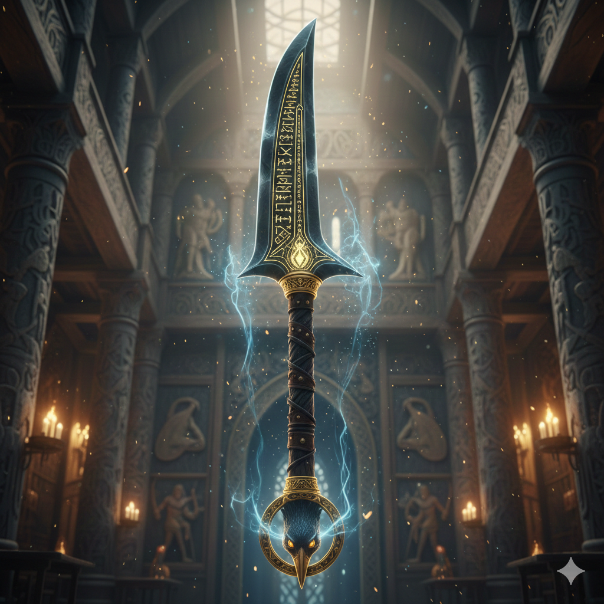
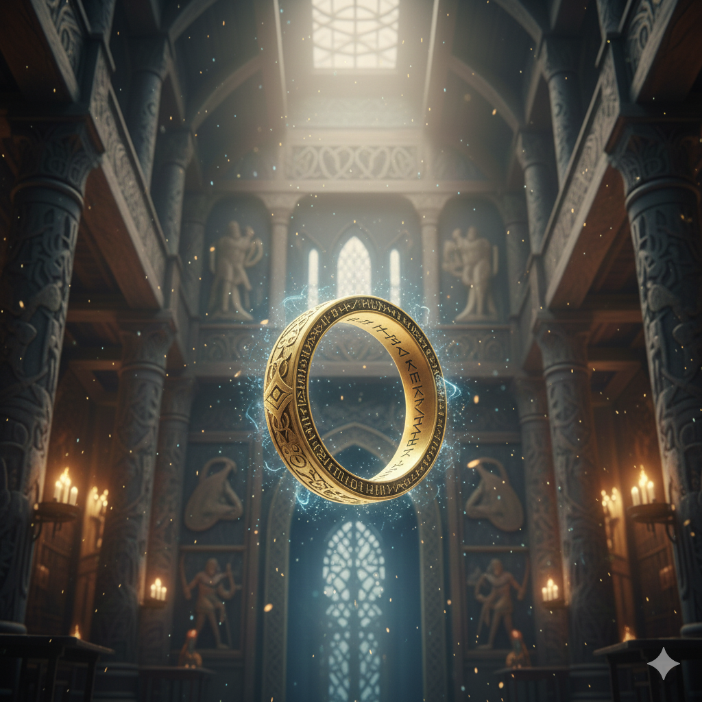
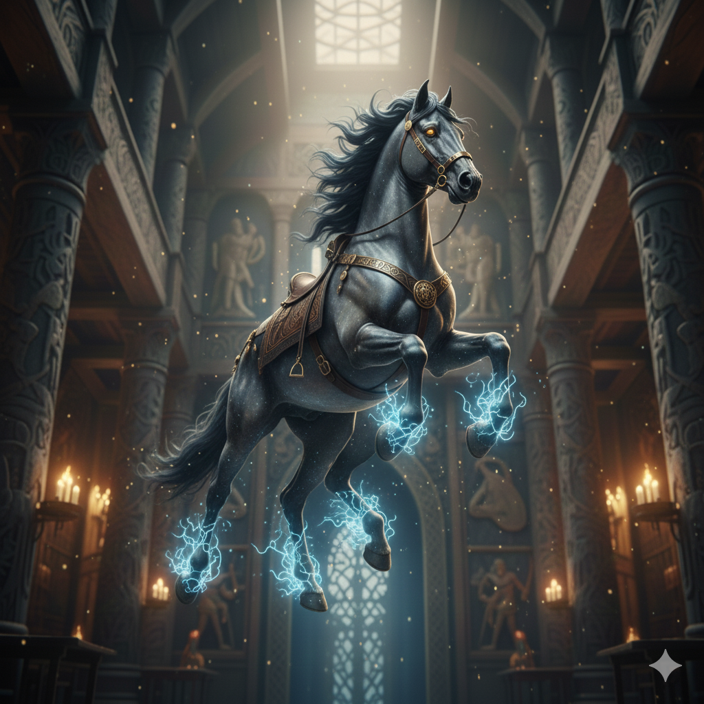
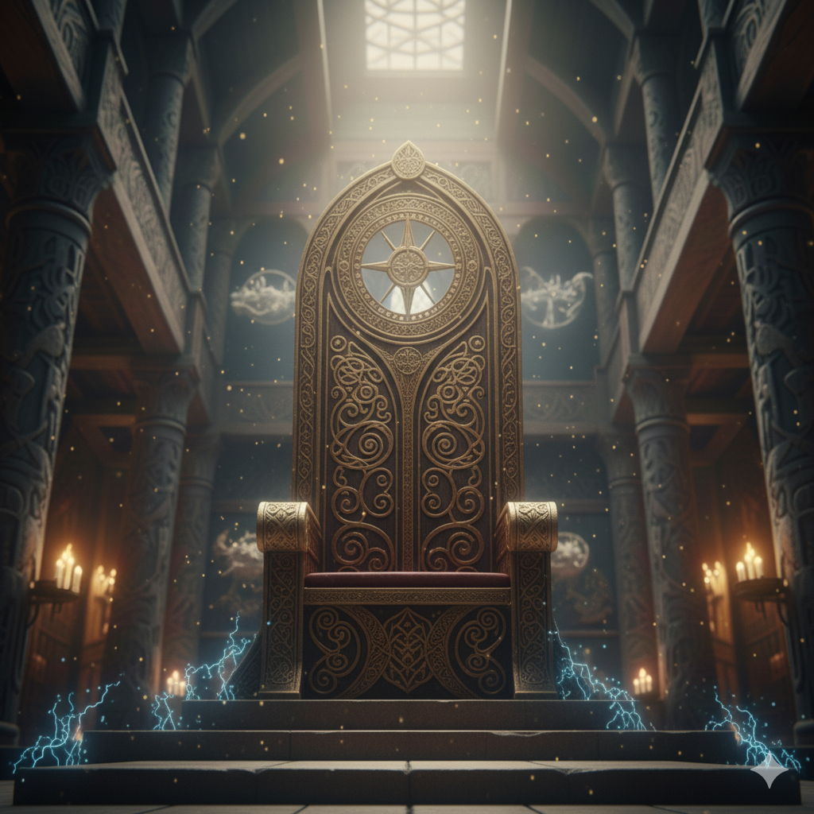

Gungnir
The spear that never fails. Forged by the dwarves, it is the symbol of Odin's law and authority. When it is thrown, war begins.
Allfather, Lord of War and Wisdom
Odin is not a god born with all knowledge; he wrested it from the cosmos through suffering. He is the ruler of Asgard and the patron of rulers and the outcasts. Unlike other gods, Odin seeks wisdom above all else, obsessively preparing for Ragnarök.
To understand the Runes, he hung from Yggdrasil for nine nights, wounded by his own spear. To see the future, he plucked out one of his eyes and offered it to Mimir's well. He is the god of poetic fury and the frenzy of battle.
The artifacts and companions that define their power in the Nine Worlds.

The spear that never fails. Forged by the dwarves, it is the symbol of Odin's law and authority. When it is thrown, war begins.

The gold ring that drips eight rings of equal weight every nine nights. It represents the ability to multiply wealth and power.

The eight-legged stallion, son of Loki. He is the fastest creature in existence, capable of galloping through the air and even into Helheim itself.

Thought and Memory. Two ravens that fly over the world every dawn and return to whisper all the secrets into the ear of the god.

"The Voracious" and "The Greedy." The wolves that guard his feet. Odin gives them all his food, for he sustains himself only on wine and mead.

The Great Throne in the tower of Valaskjálf. Whoever sits upon it can see everything that happens in the Nine Worlds; nothing is hidden from them.

The alphabet of magic and destiny. Odin "died" on the tree to gain them. With them, he can heal, curse, or calm storms.

Mimir was beheaded, but Odin embalmed his head and gave it the power of speech so that it would always advise him with ancient wisdom.
Odin instructs humanity and the gods with rules of wisdom and caution: